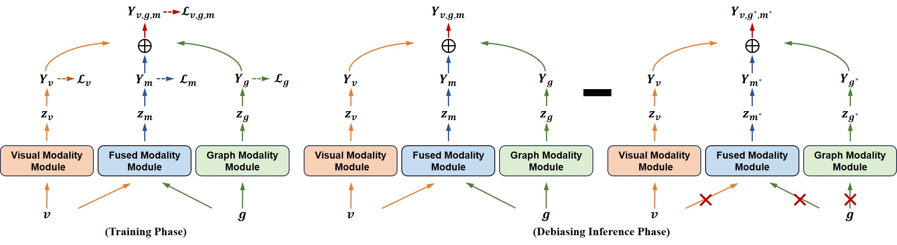
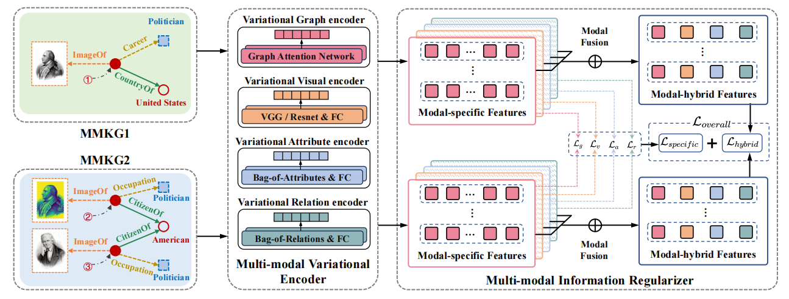
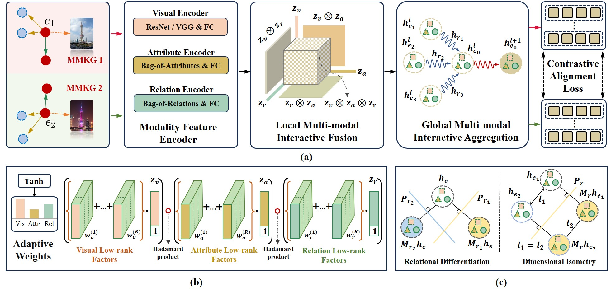

|
News
[2025-07] One Corresponding-author paper accepted to NLPCC 2025 (CCF-C).
[2025-05] One co-author paper accepted to ICML 2025 (CCF-A).
[2025-04] One first-author paper accepted to SIGIR 2025 (CCF-A), thanks to all
co-authors!
[2024-07] One first-author paper accepted to ACM MM 2024 (CCF-A), thanks to all
co-authors!
[2024-07] One first-author paper accepted to ECAI 2024 (CCF-B), thanks to all
co-authors!
|
|
Research Highlights
Interested in the Multi-modal Entity Alignment, Knowledge Representation and Reasoning, Social
Network Analysis.
|
Publications
|

|
Mitigating Modality Bias in Multi-modal Entity Alignment from a Causal Perspective
Taoyu Su, Jiawei Sheng, Duohe Ma, Xiaodong Li, Juwei Yue, Mengxiao Song, Yingkai
Tang, Tingwen Liu
SIGIR (CCF-A), 2025
arXiv / code
Leverage both visual and graph modalities to enhance MMEA while suppressing the direct causal
effect of the visual modality on model predictions.
|
|
|

|
IBMEA: Exploring Variational Information Bottleneck for Multi-modal Entity Alignment
Taoyu Su, Jiawei Sheng, Shicheng Wang, Xinghua Zhang, Hongbo Xu, Tingwen Liu
ACM MM (CCF-A), 2024
arXiv / code
Emphasize the alignment-relevant information and suppress the alignment-irrelevant information in
generating entity representations.
|
|
|

|
LoginMEA: Local-to-Global Interaction Network for Multi-modal Entity Alignment
Taoyu Su , Xinghua Zhang, Jiawei Sheng, Zhenyu Zhang, Tingwen Liu
ECAI (CCF-B), 2024
arXiv / code
Fuse local multi-modal interactions to generate holistic entity semantics and then refine them with
global relational interactions of entity neighbors.
|
Services
- Program Committee / Reviewer: ACMMM 2025, ECAI 2025, IJCNN 2025
- Secondary Reviewer: TKDE, WWW 2024-2025, KDD 2024-2025, ACMMM 2024, NIPS 2024
|
Self-evaluation
- Outstanding physical and psychological qualities
- One of the 50 members of the 600,000 candidates in Anhui Province who were qualified for the
final selection of the China Air Force in 2013
|
|
{kind=link}